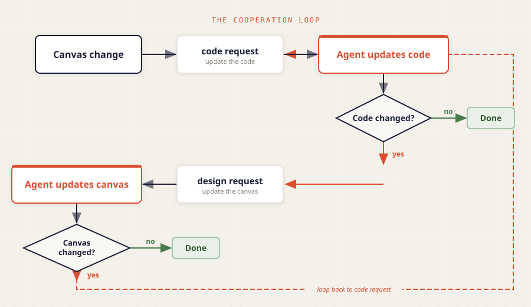

An open specification for human-AI collaborative software design
Current agentic coding treats software as text to be generated. CooperativeCoding treats it as architecture to be negotiated.
CooperativeCoding is an open standard for human-agent collaborative software design. It provides a shared data model built on JSON Canvas v1.0 where architectural elements — classes, methods, fields, packages, and their relationships — are first-class objects of collaborative design stored in a ccoding metadata namespace.
Code design and code implementation are different skills that benefit from different tools. Humans excel at architectural thinking — defining responsibilities, drawing boundaries, seeing the big picture. Agents excel at translating precise specifications into correct, complete code. Today, both activities happen in the same text editor, forcing the human to think at the wrong level of abstraction and the agent to guess at the right one.
CooperativeCoding separates these concerns. Both human and agent work on a visual canvas — a simplified UML where design elements carry documentation contracts. The agent also works on the code, implementing the canvas design and keeping canvas and code in bidirectional sync. They cooperate through a continuous sync loop: the agent can loop autonomously (implement, test, fix, repeat) while every change stays visible on the canvas. The human can intervene at any point by editing the canvas or the code.
The specification is language-agnostic and tool-agnostic. It extends JSON Canvas with typed nodes, semantic edges, a status lifecycle, and sync rules. Concrete implementations require a canvas tool plugin, a language binding, and an agent integration — but the core spec defines the universal contract that all of them share.
The foundation of human-AI collaborative design.
Architectural decisions require judgment that agents do not have: business context, team dynamics, long-term maintainability tradeoffs. Both the human and the agent can change the canvas and the code, but the human always has final say. Every change is visible on the canvas, and the human can edit anything at any time.
Every class, method, and field is its own node on the canvas, carrying full documentation: responsibility, pseudo code, signatures, and constraints. Each member exists independently, with its own identity and detail. Canvas tools may collapse or simplify nodes for readability, but the underlying data always carries the full detail.
Each node on the canvas carries natural language content: a responsibility statement, pseudo code, type signatures, and constraints. This content is the authoritative specification for what the corresponding code should do. Clear node content leads to correct implementation; vague content leads to guesswork.
Canvas and code are always in sync. Every change on either side produces a sync request for the other side. The agent processes each sync request and decides what changes are needed. The human sees every change reflected on the canvas in real time. Version control provides the audit trail and rollback.
The canvas shows a simplified UML focused on architectural thinking. A handful of node kinds, a handful of edge relations, and structured markdown for content. A place to see the shape of the system at a glance.
Sketch on a blank canvas. Describe a system in natural language and let the agent propose the design. Import existing code and let the sync engine generate the canvas. The paradigm meets you where you are.
The core concepts of CooperativeCoding (nodes, edges, relationships, the sync loop) are universal. Each programming language gets a binding, each canvas tool gets an implementation, each agent gets an integration. The core spec defines the contract; bindings fulfill it.
A continuous cycle where human intent and agent capability meet.

Human or agent creates or updates the canvas — classes, methods, fields, relationships, and documentation contracts. Both can edit the canvas and the code at any time. The canvas is where the human exercises architectural authority.
The agent generates or updates source code based on canvas elements. Documentation blocks become docstrings, edges become inheritance declarations and imports, node kinds become class skeletons. The agent can loop autonomously: implement, test, fix, repeat.
Every change on either side produces a sync request for the other. Canvas changes produce code requests; code changes produce design requests. The agent processes each request and decides what changes are needed. The loop continues until both sides match.
The building blocks of architectural description — a semantic layer on top of JSON Canvas v1.0.
member edge. Contains signature, pseudo code, and constraints.
tests edges. Carries test execution results alongside design intent.
class node with an appropriate stereotype.
package in languages where the distinction matters.
protocol, dataclass, enum, abstract, singleton, mixin, and any others your language binding defines. Unknown stereotypes are preserved and displayed as-is — implementations must not reject them.
Canvas and code are two views of the same system. The sync engine keeps them honest.
inherits edges create inheritance declarationsimplements edges create protocol conformancecomposes edges generate typed field declarationsdepends edges generate import statementscalls edges — informational, not structuralFour steps to begin working with CooperativeCoding.
Start with the Introduction for the vision and principles. Then explore the Data Model, Lifecycle, Sync, and Language Bindings documents for the full technical contract.
Read the Introduction →CooperativeCoding works with any canvas tool that supports JSON Canvas v1.0. The reference implementation uses Obsidian with a dedicated plugin that renders CooperativeCoding nodes and edges.
Explore JSON Canvas →Each programming language needs a binding that maps abstract spec concepts to language-specific idioms. The Python binding is the reference implementation, covering stereotypes, AST parsing, type translation, and sync mapping.
Python Binding Reference →Teach your agentic coding tool the cooperation protocol: process sync requests in both directions, implement code from canvas designs, update the canvas when code changes, and loop autonomously while keeping everything visible. The spec defines the cooperation contract; your agent fulfills it.
View on GitHub →The complete CooperativeCoding specification, organized in five core documents plus a language binding reference.
Vision, core principles, terminology, scope, non-goals, and the document index. Start here to understand why CooperativeCoding exists and what it defines.
Read →Canvas nodes, edges, and metadata schemas. Node kinds, edge relations, the ccoding namespace, edge labels, context nodes, and node text content rules.
Entry points, the sync loop, agent and human roles, and agent communication approaches. How the continuous bidirectional sync model works in practice.
Read →Bidirectional sync semantics. Canvas-to-code rules, code-to-canvas rules, state tracking via qualified names, sync triggers, and the convergence guarantee.
Read →The contract for language-specific mappings. Stereotype mapping, AST parsing, type translation, documentation format, and the three-tier compliance model (MUST, SHOULD, MAY).
Read →The reference Python binding. Covers Python stereotypes, docstring conventions, type annotation mapping, ccoding CLI usage, and structured content conventions.